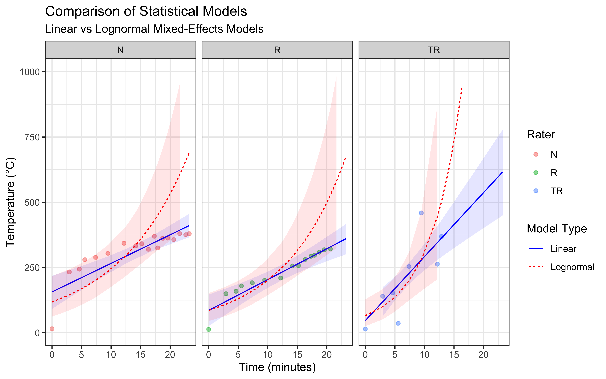
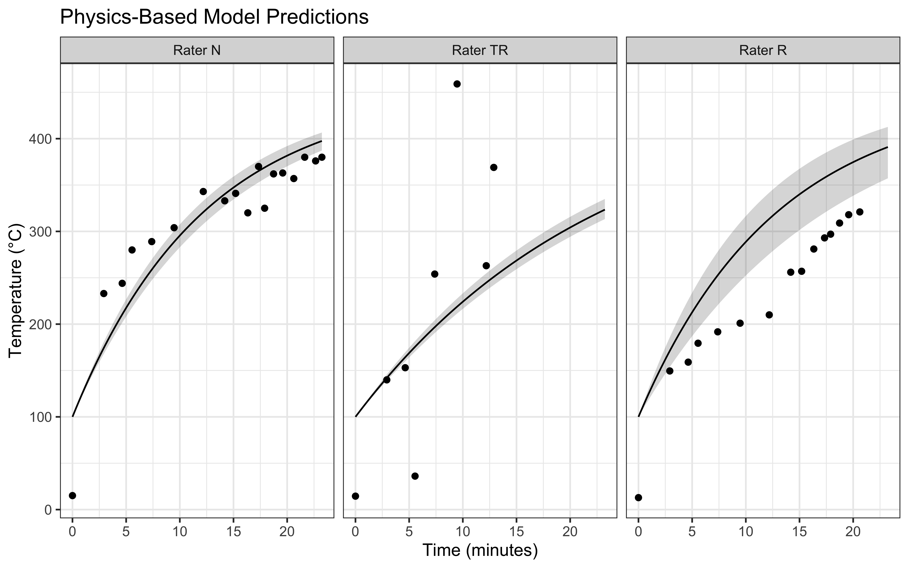
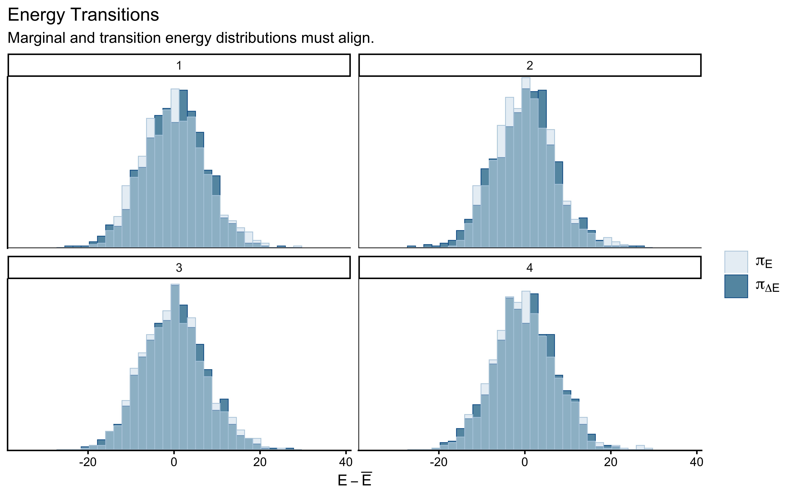

Chapter 2 Foundations
2.1 From Pizza to Cognitive Models: An Introduction
This chapter introduces core modeling concepts through an unexpected lens: the physics of pizza stone heating. While this might seem far removed from cognitive science, it provides an insightful introduction to the challenges and methodologies of modeling complex phenomena.
2.2 Why Start with Pizza?
Do I even need to answer that question? Because pizza, obviously.
In any case, understanding how humans think and make decisions is arguably one of the most complex challenges in science. Rather than diving directly into this complexity, we begin with a more tractable problem: modeling how a pizza stone heats up in an oven. This seemingly simple process introduces us to key modeling concepts:
- The importance of selecting appropriate levels of analysis
- The role of prior knowledge in model development
- The challenge of balancing model complexity with practical utility
- The necessity of rigorous validation approaches
Through this concrete example, we can focus on understanding modeling principles without the added complexity of cognitive theory.
2.3 Learning Objectives
This first chpater is a bit odd, in that it pushes you straight into the deep waters of a complex example. I don’t expect you to understand all the technicalities. But, by completing this tutorial, you will be able to better grasp the importance of generative modeling, that is, of modeling that is focused on the underlying mechanisms producing the data.
On the side you might learn something about how to * Implement physics-based thermal modeling using R and Stan * Apply Bayesian inference to real-world temperature data * Compare different statistical models using posterior predictions * Create professional visualizations of temperature evolution * Make practical predictions about heating times under various conditions
Oh, and you’ll probably get hungry as well!
Required Packages
required_packages <- c(
"tidyverse", # For data manipulation and visualization
"brms", # For Bayesian regression modeling
"bayesplot", # For visualization of Bayesian models
"tidybayes", # For working with Bayesian samples
"cmdstanr" # For Stan implementation
)
# Install and load packages
for (pkg in required_packages) {
if (!require(pkg, character.only = TRUE)) {
install.packages(pkg)
library(pkg, character.only = TRUE)
}
}2.4 Part 1: Exploring the Pizza Stone Temperature Data
In this study, we collected temperature measurements from a pizza stone in a gas-fired oven using an infrared temperature gun. Three different raters (N, TR, and R) took measurements over time to track how the stone heated up. Understanding how pizza stones heat up is crucial for achieving the perfect pizza crust, as consistent and sufficient stone temperature is essential for proper baking.
The measurements were taken as follows:
# Load and examine the data
data <- tibble(
Order = rep(0:18, 3),
Seconds = rep(c(0, 175, 278, 333, 443, 568, 731, 773, 851, 912, 980,
1040, 1074, 1124, 1175, 1237, 1298, 1359, 1394), 3),
Temperature = c(15.1, 233, 244, 280, 289, 304, 343, NA, 333, 341, 320,
370, 325, 362, 363, 357, 380, 376, 380,
14.5, 139.9, 153, 36.1, 254, 459, 263, 369, rep(NA, 11),
12.9, 149.5, 159, 179.4, 191.7, 201, 210, NA, 256, 257,
281, 293, 297, 309, 318, 321, rep(NA, 3)),
Rater = rep(c("N", "TR", "R"), each = 19)
)
# Create summary statistics
summary_stats <- data %>%
group_by(Rater) %>%
summarize(
n_measurements = sum(!is.na(Temperature)),
mean_temp = mean(Temperature, na.rm = TRUE),
sd_temp = sd(Temperature, na.rm = TRUE),
min_temp = min(Temperature, na.rm = TRUE),
max_temp = max(Temperature, na.rm = TRUE)
)
# Display summary statistics
knitr::kable(summary_stats, digits = 1)| Rater | n_measurements | mean_temp | sd_temp | min_temp | max_temp |
|---|---|---|---|---|---|
| N | 18 | 312.0 | 86.4 | 15.1 | 380 |
| R | 15 | 229.0 | 83.9 | 12.9 | 321 |
| TR | 8 | 211.1 | 155.2 | 14.5 | 459 |
2.4.1 Initial Data Visualization
Let’s visualize how the temperature evolves over time for each rater:
ggplot(data, aes(x = Seconds/60, y = Temperature, color = Rater)) +
geom_point(size = 3, alpha = 0.7) +
geom_line(alpha = 0.5) +
labs(
title = "Pizza Stone Temperature Evolution",
subtitle = "Measurements by three different raters",
x = "Time (minutes)",
y = "Temperature (°C)",
color = "Rater"
) +
theme_bw() +
scale_color_brewer(palette = "Set1")
2.4.2 Key Observations
Several interesting patterns emerge from our data:
Heating Patterns: The temperature generally increases over time, but not uniformly. We observe some fluctuations that might be due to:
- Variation in gas flame intensity
- Different measurement locations on the stone
- Measurement technique differences between raters
Measurement Patterns by Rater
- Rater N maintained consistent measurements throughout the experiment
- Rater TR shows more variability and fewer total measurements
- Rater R shows a more gradual temperature increase pattern
Missing Data: Some measurements are missing (NA values), particularly in the later time points for Rater TR. This is common in real-world data collection and needs to be considered in our analysis.
Let’s examine the rate of temperature change:
# Calculate temperature change rate
data_with_rate <- data %>%
group_by(Rater) %>%
arrange(Seconds) %>%
mutate(
temp_change = (Temperature - lag(Temperature)) / (Seconds - lag(Seconds)) * 60,
minutes = Seconds/60
) %>%
filter(!is.na(temp_change))
# Visualize temperature change rate
ggplot(data_with_rate, aes(x = minutes, y = temp_change, color = Rater)) +
geom_point() +
geom_smooth(se = FALSE, span = 0.75) +
labs(
title = "Rate of Temperature Change Over Time",
subtitle = "Degrees Celsius per minute",
x = "Time (minutes)",
y = "Temperature Change Rate (°C/min)",
color = "Rater"
) +
theme_bw() +
scale_color_brewer(palette = "Set1")
This visualization reveals that the heating rate is highest in the first few minutes and gradually decreases as the stone temperature approaches the oven temperature. This aligns with Newton’s Law of Cooling/Heating, which we will explore in the next section.
2.5 Part 2: Initial Statistical Modeling
Before developing our physics-based model, let’s explore how standard statistical approaches perform in modeling our temperature data. We’ll implement two types of models using the brms package: a linear mixed-effects model and a lognormal mixed-effects model. Both models will account for variations between raters.
2.5.1 Model Setup and Priors
First, let’s ensure we have a directory for our models and set up our computational parameters:
2.5.2 Linear Mixed-Effects Model
We begin with a linear mixed-effects model, which assumes that temperature increases linearly with time but allows for different patterns across raters. This model includes both fixed effects (overall time trend) and random effects (rater-specific variations).
# Define priors for linear model
linear_priors <- c(
prior(normal(15, 20), class = "Intercept"), # Centered around room temperature
prior(normal(0, 1), class = "b"), # Expected temperature change per second
prior(normal(0, 100), class = "sigma"), # Residual variation
prior(normal(0, 100), class = "sd"), # Random effects variation
prior(lkj(3), class = "cor") # Random effects correlation
)
# Fit linear mixed-effects model
linear_model <- brm(
Temperature ~ Seconds + (1 + Seconds | Rater),
data = data,
family = gaussian,
prior = linear_priors,
chains = mc_settings$chains,
iter = mc_settings$iter,
seed = mc_settings$seed,
backend = mc_settings$backend,
file = "models/01_pizza_linear_model",
cores = 2,
adapt_delta = 0.99,
max_treedepth = 20
)
# Display model summary
summary(linear_model)## Family: gaussian
## Links: mu = identity; sigma = identity
## Formula: Temperature ~ Seconds + (1 + Seconds | Rater)
## Data: data (Number of observations: 41)
## Draws: 2 chains, each with iter = 6000; warmup = 3000; thin = 1;
## total post-warmup draws = 6000
##
## Multilevel Hyperparameters:
## ~Rater (Number of levels: 3)
## Estimate Est.Error l-95% CI u-95% CI Rhat Bulk_ESS Tail_ESS
## sd(Intercept) 88.18 49.29 14.36 210.34 1.00 1804 1750
## sd(Seconds) 0.70 0.57 0.15 2.34 1.00 1226 1398
## cor(Intercept,Seconds) -0.03 0.38 -0.71 0.67 1.00 2106 3251
##
## Regression Coefficients:
## Estimate Est.Error l-95% CI u-95% CI Rhat Bulk_ESS Tail_ESS
## Intercept 75.42 71.38 -110.73 194.77 1.00 1461 1136
## Seconds -0.08 0.11 -0.25 0.19 1.00 1406 1133
##
## Further Distributional Parameters:
## Estimate Est.Error l-95% CI u-95% CI Rhat Bulk_ESS Tail_ESS
## sigma 58.36 7.51 46.01 75.32 1.00 3735 3662
##
## Draws were sampled using sample(hmc). For each parameter, Bulk_ESS
## and Tail_ESS are effective sample size measures, and Rhat is the potential
## scale reduction factor on split chains (at convergence, Rhat = 1).2.5.3 Lognormal Mixed-Effects Model
The lognormal model accounts for the fact that temperature changes might be proportional rather than additive, and ensures predictions cannot go below zero (I don’t bring my oven out in the freezing cold!).
# Define priors for lognormal model
lognormal_priors <- c(
prior(normal(2.7, 1), class = "Intercept"), # Log scale for room temperature
prior(normal(0, 0.01), class = "b"), # Expected log-scale change per second
prior(normal(0, 1), class = "sigma"), # Log-scale residual variation
prior(normal(0, 1), class = "sd"), # Random effects variation
prior(lkj(3), class = "cor") # Random effects correlation
)
# Fit lognormal mixed-effects model
lognormal_model <- brm(
Temperature ~ Seconds + (1 + Seconds | Rater),
data = data,
family = lognormal,
prior = lognormal_priors,
chains = mc_settings$chains,
cores = 2,
adapt_delta = 0.99,
max_treedepth = 20,
iter = mc_settings$iter,
seed = mc_settings$seed,
backend = mc_settings$backend,
file = "models/01_pizza_lognormal_model"
)
# Generate predictions
lognormal_preds <- fitted(
lognormal_model,
newdata = data,
probs = c(0.025, 0.975)
) %>%
as_tibble() %>%
bind_cols(data)2.5.4 Model Comparison and Visualization
Let’s compare how these models fit our data:
# Compare models using LOO
model_comparison <- loo_compare(
loo(linear_model),
loo(lognormal_model)
)
# Create comparison plot
ggplot() +
# Raw data points
geom_point(data = data,
aes(x = Seconds/60, y = Temperature, color = Rater),
alpha = 0.5) +
# Linear model predictions
geom_line(data = linear_preds,
aes(x = Seconds/60, y = Estimate, linetype = "Linear"),
color = "blue") +
geom_ribbon(data = linear_preds,
aes(x = Seconds/60, ymin = Q2.5, ymax = Q97.5),
fill = "blue", alpha = 0.1) +
# Lognormal model predictions
geom_line(data = lognormal_preds,
aes(x = Seconds/60, y = Estimate, linetype = "Lognormal"),
color = "red") +
geom_ribbon(data = lognormal_preds,
aes(x = Seconds/60, ymin = Q2.5, ymax = Q97.5),
fill = "red", alpha = 0.1) +
# Formatting
facet_wrap(~Rater) +
labs(
title = "Comparison of Statistical Models",
subtitle = "Linear vs Lognormal Mixed-Effects Models",
x = "Time (minutes)",
y = "Temperature (°C)",
linetype = "Model Type"
) +
theme_bw()
# Create comparison plot but capping the y axis
ggplot() +
# Raw data points
geom_point(data = data,
aes(x = Seconds/60, y = Temperature, color = Rater),
alpha = 0.5) +
# Linear model predictions
geom_line(data = linear_preds,
aes(x = Seconds/60, y = Estimate, linetype = "Linear"),
color = "blue") +
geom_ribbon(data = linear_preds,
aes(x = Seconds/60, ymin = Q2.5, ymax = Q97.5),
fill = "blue", alpha = 0.1) +
# Lognormal model predictions
geom_line(data = lognormal_preds,
aes(x = Seconds/60, y = Estimate, linetype = "Lognormal"),
color = "red") +
geom_ribbon(data = lognormal_preds,
aes(x = Seconds/60, ymin = Q2.5, ymax = Q97.5),
fill = "red", alpha = 0.1) +
ylim(0, 1000) +
# Formatting
facet_wrap(~Rater) +
labs(
title = "Comparison of Statistical Models",
subtitle = "Linear vs Lognormal Mixed-Effects Models",
x = "Time (minutes)",
y = "Temperature (°C)",
linetype = "Model Type"
) +
theme_bw()
2.5.5 Model Assessment
I have seen worse models in my time, but they do seem to have important issues:
The linear mixed-effects model assumes a constant rate of temperature change, which we can see is not at all accurate. The actual temperature increase is fast at the beginning and appears to slow down over time, particularly at higher temperatures. While this model has the advantage of simplicity, it is not likely to produce accurate predictions as it seem to fail to capture the underlying physics of heat transfer.
The lognormal mixed-effects model is completely off.
Further, the models produce some divergences, which is often a sign that they are not well suited to the data. I suggest that the issue is that neither model incorporates our knowledge of heat transfer physics, which suggests an exponential approach to equilibrium temperature. This limitation motivates our next section, where we’ll develop a physics-based model.
2.6 Part 3: Understanding the Physics Model
Temperature evolution in a pizza stone follows Newton’s Law of Cooling/Heating. We’ll start by exploring this physical model before applying it to real data.
2.6.1 The Basic Temperature Evolution Equation
The temperature evolution of a pizza stone in a gas-fired oven is governed by the heat diffusion equation, which describes how heat flows through solid materials:
\[\rho c_p \frac{\partial T}{\partial t} = k\nabla^2T + Q\]
where: \(\rho\) represents the stone’s density (kg/m³) \(c_p\) denotes specific heat capacity (J/kg·K) \(T\) is temperature (K) \(t\) represents time (s) \(k\) is thermal conductivity (W/m·K) \(\nabla^2\) is the Laplacian operator \(Q\) represents heat input from the oven (W/m³)
While this equation provides a complete description of heat flow, we can significantly simplify our analysis by applying the lumped capacitance model. This simplification assumes that the temperature throughout the pizza stone remains uniform at any given time - not perfect, but a reasonable assumption given the stone’s relatively thin profile and good thermal conductivity. This approach reduces our model to:
\[\frac{dT}{dt} = \frac{hA}{mc_p}(T_{\infty} - T)\]
where: \(h\) is the heat transfer coefficient (W/m²·K) \(A\) is the surface area exposed to heat (m²) \(m\) is the stone’s mass (kg) \(T_{\infty}\) is the oven temperature (K)
This simplified equation relates the rate of temperature change to the difference between the current stone temperature T and the flame temperature T∞. The coefficient h represents the heat transfer coefficient between the flame and stone, A is the stone’s surface area exposed to heat, m is its mass, and cp remains the specific heat capacity.
To solve this differential equation, we begin by separating variables:
\[\frac{dT}{T_{\infty} - T} = \left(\frac{hA}{mc_p}\right)dt\]
Integration of both sides yields:
\[-\ln|T_{\infty} - T| = \left(\frac{hA}{mc_p}\right)t + C\]
where C is an integration constant.
Using the initial condition \(T = T_i\) at \(t = 0\), we can determine the integration constant:
\[C = -\ln|T_{\infty} - T_i|\]
Substituting this back and solving for temperature gives us:
\[T = T_{\infty} + (T_i - T_{\infty})\exp\left(-\frac{hA}{mc_p}t\right)\]
For practical reasons, we combine physical parameters into a single coefficient \(\theta\):
\[HOT = \frac{hA}{mc_p}\] Giving our working equation: \[T = T_{\infty} + (T_i - T_{\infty})\exp(-HOT * t)\]
This equation retains the essential physics while providing a practical model for analyzing our experimental data. The HOT coefficient encapsulates the combined effects of heat transfer efficiency, stone geometry, and material properties into a single parameter that determines how quickly the stone approaches the flame temperature.
2.7 Part 4: Implementing the Physics-Based Model
Having established the theoretical foundation for our heat transfer model, we now move to its practical implementation. We will use Stan to create a Bayesian implementation of our physics-based model, allowing us to account for measurement uncertainty and variation between raters. First, we prepare our data for the Stan model. Our model requires initial temperatures, time measurements, and observed temperatures from each rater:
# Create data structure for Stan
stan_data <- list(
N = nrow(data %>% filter(!is.na(Temperature))),
time = data %>% filter(!is.na(Temperature)) %>% pull(Seconds),
temp = data %>% filter(!is.na(Temperature)) %>% pull(Temperature),
n_raters = 3,
rater = as.numeric(factor(data %>%
filter(!is.na(Temperature)) %>%
pull(Rater))),
Ti = c(100, 100, 100), # Initial temperature estimates
Tinf = 450 # Flame temperature estimate
)Next, we implement our physics-based model in Stan. The model incorporates our derived equation while allowing for rater-specific heating coefficients:
stan_code <- "
data {
int<lower=0> N; // Number of observations
vector[N] time; // Time points
vector[N] temp; // Observed temperatures
int<lower=0> n_raters; // Number of raters
array[N] int<lower=1,upper=n_raters> rater; // Rater indices
vector[n_raters] Ti; // Initial temperatures
real Tinf; // Flame temperature
}
parameters {
vector<lower=0>[n_raters] HOT; // Heating coefficients
vector<lower=0>[n_raters] sigma; // Measurement error
}
model {
vector[N] mu;
// Physics-based temperature prediction
for (i in 1:N) {
mu[i] = Tinf + (Ti[rater[i]] - Tinf) * exp(-HOT[rater[i]] * time[i]);
}
// Prior distributions
target += normal_lpdf(HOT | 0.005, 0.005); // Prior for heating rate
target += exponential_lpdf(sigma | 1); // Prior for measurement error
// Likelihood
target += normal_lpdf(temp | mu, sigma[rater]);
}
"
# Save the model
writeLines(stan_code, "models/pizza_physics_model.stan")
# Compile and fit the model
mod <- cmdstan_model("models/pizza_physics_model.stan")
fit <- mod$sample(
data = stan_data,
seed = 123,
chains = 2,
parallel_chains = 2
)## Running MCMC with 2 parallel chains...
##
## Chain 1 Iteration: 1 / 2000 [ 0%] (Warmup)
## Chain 1 Iteration: 100 / 2000 [ 5%] (Warmup)
## Chain 1 Iteration: 200 / 2000 [ 10%] (Warmup)
## Chain 1 Iteration: 300 / 2000 [ 15%] (Warmup)
## Chain 1 Iteration: 400 / 2000 [ 20%] (Warmup)
## Chain 1 Iteration: 500 / 2000 [ 25%] (Warmup)
## Chain 1 Iteration: 600 / 2000 [ 30%] (Warmup)
## Chain 1 Iteration: 700 / 2000 [ 35%] (Warmup)
## Chain 1 Iteration: 800 / 2000 [ 40%] (Warmup)
## Chain 1 Iteration: 900 / 2000 [ 45%] (Warmup)
## Chain 1 Iteration: 1000 / 2000 [ 50%] (Warmup)
## Chain 1 Iteration: 1001 / 2000 [ 50%] (Sampling)
## Chain 1 Iteration: 1100 / 2000 [ 55%] (Sampling)
## Chain 1 Iteration: 1200 / 2000 [ 60%] (Sampling)
## Chain 1 Iteration: 1300 / 2000 [ 65%] (Sampling)
## Chain 1 Iteration: 1400 / 2000 [ 70%] (Sampling)
## Chain 1 Iteration: 1500 / 2000 [ 75%] (Sampling)
## Chain 1 Iteration: 1600 / 2000 [ 80%] (Sampling)
## Chain 1 Iteration: 1700 / 2000 [ 85%] (Sampling)
## Chain 1 Iteration: 1800 / 2000 [ 90%] (Sampling)
## Chain 1 Iteration: 1900 / 2000 [ 95%] (Sampling)
## Chain 1 Iteration: 2000 / 2000 [100%] (Sampling)
## Chain 2 Iteration: 1 / 2000 [ 0%] (Warmup)
## Chain 2 Iteration: 100 / 2000 [ 5%] (Warmup)
## Chain 2 Iteration: 200 / 2000 [ 10%] (Warmup)
## Chain 2 Iteration: 300 / 2000 [ 15%] (Warmup)
## Chain 2 Iteration: 400 / 2000 [ 20%] (Warmup)
## Chain 2 Iteration: 500 / 2000 [ 25%] (Warmup)
## Chain 2 Iteration: 600 / 2000 [ 30%] (Warmup)
## Chain 2 Iteration: 700 / 2000 [ 35%] (Warmup)
## Chain 2 Iteration: 800 / 2000 [ 40%] (Warmup)
## Chain 2 Iteration: 900 / 2000 [ 45%] (Warmup)
## Chain 2 Iteration: 1000 / 2000 [ 50%] (Warmup)
## Chain 2 Iteration: 1001 / 2000 [ 50%] (Sampling)
## Chain 2 Iteration: 1100 / 2000 [ 55%] (Sampling)
## Chain 2 Iteration: 1200 / 2000 [ 60%] (Sampling)
## Chain 2 Iteration: 1300 / 2000 [ 65%] (Sampling)
## Chain 2 Iteration: 1400 / 2000 [ 70%] (Sampling)
## Chain 2 Iteration: 1500 / 2000 [ 75%] (Sampling)
## Chain 2 Iteration: 1600 / 2000 [ 80%] (Sampling)
## Chain 2 Iteration: 1700 / 2000 [ 85%] (Sampling)
## Chain 2 Iteration: 1800 / 2000 [ 90%] (Sampling)
## Chain 2 Iteration: 1900 / 2000 [ 95%] (Sampling)
## Chain 2 Iteration: 2000 / 2000 [100%] (Sampling)
## Chain 1 finished in 0.1 seconds.
## Chain 2 finished in 0.1 seconds.
##
## Both chains finished successfully.
## Mean chain execution time: 0.1 seconds.
## Total execution time: 0.9 seconds.The Stan implementation translates our mathematical model into a computational framework. We assign informative priors to our parameters based on physical understanding: the heating coefficient (HOT) is expected to be small but positive, while measurement error (sigma) follows an exponential distribution to ensure positivity while allowing for varying levels of uncertainty between raters. To visualize our model’s predictions and assess its performance, we extract posterior samples and generate predictions across our time range:
# Extract draws
post <- as_draws_df(fit$draws()) %>%
dplyr::select(starts_with("HOT"), starts_with("sigma")) %>%
slice_sample(n = 100)
# Create prediction grid
pred_data <- tidyr::crossing(
time = seq(0, max(stan_data$time), length.out = 100),
rater = 1:stan_data$n_raters
) %>%
mutate(
Ti = stan_data$Ti[rater],
Tinf = stan_data$Tinf
)
# Generate predictions
pred_matrix <- matrix(NA, nrow = nrow(pred_data), ncol = 100)
for (i in 1:nrow(pred_data)) {
pred_matrix[i,] <- with(pred_data[i,],
Tinf + (Ti - Tinf) * exp(-as.matrix(post)[,rater] * time))
}
# Summarize predictions
predictions <- pred_data %>%
mutate(
mean = rowMeans(pred_matrix),
lower = apply(pred_matrix, 1, quantile, 0.025),
upper = apply(pred_matrix, 1, quantile, 0.975)
)
# Create visualization
ggplot(predictions, aes(x = time/60)) +
geom_ribbon(aes(ymin = lower, ymax = upper), alpha = 0.2) +
geom_line(aes(y = mean)) +
geom_point(
data = data %>%
filter(!is.na(Temperature)) %>%
mutate(rater = case_when(
Rater == "N" ~ 1,
Rater == "TR" ~ 2,
Rater == "R" ~ 3
)),
aes(x = Seconds/60, y = Temperature)
) +
facet_wrap(~rater, labeller = labeller(rater = c(
"1" = "Rater N",
"2" = "Rater TR",
"3" = "Rater R"
))) +
labs(
title = "Physics-Based Model Predictions",
x = "Time (minutes)",
y = "Temperature (°C)"
) +
theme_bw()
Our implementation combines the theoretical understanding developed in Part 3 with practical considerations for real-world data analysis. The model accounts for measurement uncertainty while maintaining the fundamental physics of heat transfer, providing a robust framework for understanding pizza stone temperature evolution.
2.8 Part 5: Model Analysis and Practical Applications
Having implemented our physics-based model, we can now analyze its predictions and develop practical insights for pizza stone temperature management. A key question for pizza making is how long it takes to reach optimal cooking temperatures under different conditions. We begin by creating a function that calculates the time needed to reach a target temperature:
time_to_temp <- function(target_temp, HOT, Ti, Tinf) {
# Solve: target = Tinf + (Ti - Tinf) * exp(-HOT * t)
# for t
t = -1/HOT * log((target_temp - Tinf)/(Ti - Tinf))
return(t/60) # Convert seconds to minutes
}To understand heating times across different oven conditions, we examine how varying flame temperatures affect the time needed to reach pizza-making temperatures. We extract the heating coefficients from our fitted model and analyze temperature scenarios:
# Extract HOT samples from our posterior
hot_samples <- as_draws_df(fit$draws()) %>%
dplyr::select(starts_with("HOT"))
# Create prediction grid for different flame temperatures
pred_data <- tidyr::crossing(
Tinf = seq(450, 1200, by = 50), # Range of flame temperatures
rater = 1:3
) %>%
mutate(
Ti = stan_data$Ti[rater],
target_temp = 400 # Target temperature for pizza cooking
)
# Calculate heating times across conditions
n_samples <- 100
time_preds <- map_dfr(1:nrow(pred_data), function(i) {
times <- sapply(1:n_samples, function(j) {
hot <- hot_samples[j, paste0("HOT[", pred_data$rater[i], "]")][[1]]
time_to_temp(
pred_data$target_temp[i],
hot,
pred_data$Ti[i],
pred_data$Tinf[i]
)
})
data.frame(
rater = pred_data$rater[i],
Tinf = pred_data$Tinf[i],
mean_time = mean(times),
lower = quantile(times, 0.025),
upper = quantile(times, 0.975)
)
})
# Visualize heating time predictions
ggplot(time_preds, aes(x = Tinf)) +
geom_ribbon(aes(ymin = lower, ymax = upper), alpha = 0.2) +
geom_line(aes(y = mean_time)) +
facet_wrap(~rater, labeller = labeller(rater = c(
"1" = "Rater N",
"2" = "Rater TR",
"3" = "Rater R"
))) +
labs(
title = "Time Required to Reach Pizza-Making Temperature",
subtitle = "Target temperature: 400°C",
x = "Flame Temperature (°C)",
y = "Minutes to reach target"
) +
theme_bw()
Our analysis reveals several important insights for practical pizza making. First, the heating time decreases nonlinearly with flame temperature, showing diminishing returns at very high temperatures. We can also observe differences between raters in their measured heating times. These variations likely stem from differences in measurement technique and location on the stone, highlighting the importance of consistent temperature monitoring practices. For practical application, we can provide specific heating guidelines based on our model. At a typical flame temperature of 800°C, the model predicts it will take approximately 20-30 minutes to reach optimal pizza-making temperature, assuming room temperature start. However, this time can vary significantly based on:
- Initial stone temperature
- Flame temperature and consistency
- Environmental conditions.
Can we really wait that long?
2.9 Conclusion: From Pizza to Principles
The journey from modeling a heating pizza stone to understanding cognitive processes might seem unusual, but it illustrates fundamental principles that will guide us throughout this course.
Through this seemingly simple physics problem, we have encountered the core challenges that cognitive scientists face daily. Just relying on standard statistical models is not enough. We need to understand the underlying generative processes. We discovered how choosing the right level of analysis shapes our understanding - just as we simplified complex heat equations into workable models, cognitive scientists must decide which aspects of the mental processes to model explicitly and which to abstract. We learned that even well-understood physical processes require careful statistical treatment, foreshadowing the challenges we will face with more complex cognitive phenomena.
The pizza stone experiment also demonstrated the importance of rigorous methodology. We saw how multiple measurements from different raters revealed variability in our data, leading us to consider measurement error and individual differences - themes that will become crucial when studying human behavior. Our exploration of different statistical approaches, from simple linear models to more sophisticated Bayesian frameworks, established a foundation for the modeling techniques we will develop throughout this course.
Perhaps most importantly, this chapter starts showing that successful modeling requires balancing competing demands. We must weigh theoretical complexity against practical utility, statistical sophistication against interpretability, and mathematical elegance against real-world applicability. These trade-offs will become even more prominent as we move into modeling cognitive processes.
As we progress through this course, we will encounter increasingly complex cognitive phenomena. The principles we learned here - careful data collection, thoughtful model specification, rigorous validation, and balanced interpretation - will serve as our guide. While human cognition presents challenges far beyond those of heating pizza stones, the fundamental approach remains the same: start with clear observations, build theoretically motivated models, and test them systematically against data.
In the next chapter, we will begin applying these principles directly to cognitive processes, starting with simple decision-making tasks. The mathematical tools and statistical frameworks introduced here will provide the foundation for understanding how humans process information and make choices.
Finally, I hope you are hungry now. I know I am. Let’s go and make some pizza!